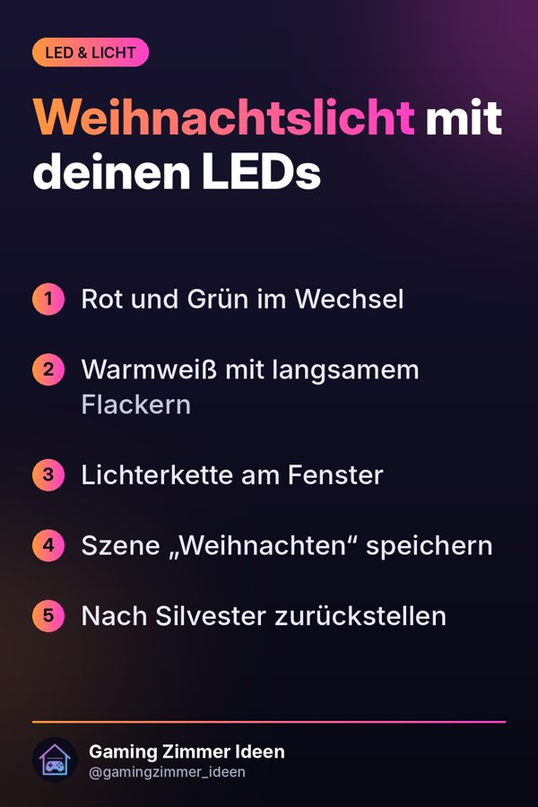

Ideen › LED Beleuchtung Gaming Zimmer
Weihnachtslicht mit deinen LEDs: 5 festliche Ideen fürs Gaming-Zimmer

Deine LEDs können auch Weihnachten: Rot und Grün im Wechsel, Warmweiß mit langsamem Flackern wie Kerzenlicht, eine Lichterkette am Fenster und eine eigene Szene „Weihnachten“ in der App. Nach Silvester einfach zurückstellen. So wird dein Gaming-Zimmer festlich.
Auf einen Blick
- Rot und Grün im Wechsel
- Warmweiß mit langsamem Flackern
- Lichterkette am Fenster
- Szene „Weihnachten“ speichern
- Nach Silvester zurückstellen
Tipp: Der Flacker-Modus in Warmweiß wirkt fast wie echte Kerzen – ganz ohne Brandgefahr.